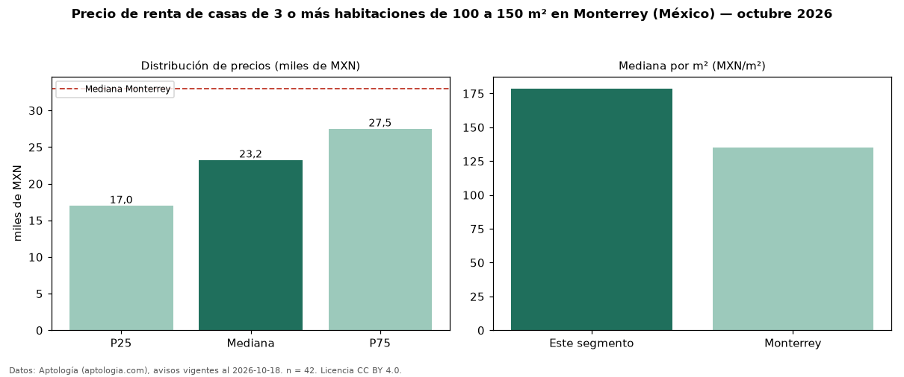

Precio de renta de casas de 3 o más habitaciones de 100 a 150 m² en Monterrey (México) — octubre 2026
Con 42 avisos vigentes, el canon mediano de casas de 3 o más habitaciones de 100 a 150 m² en renta en Monterrey (México) es MXN 23.250 al mes. Frente a la mediana de las casas de 3 o más habitaciones en renta de Monterrey (MXN 34.000, n = 603), queda 32 % por debajo; este segmento reúne el 7 % de esos avisos. Por metro cuadrado, la mediana es MXN 179/m² al mes (n = 42), 34 % por encima de las casas de 3 o más habitaciones en renta de Monterrey (MXN 133/m²). El área mediana anunciada es 126 m². La mediana de todas las casas en renta de Monterrey es MXN 33.000 (−30 % de diferencia). La mitad central de los avisos va de MXN 17.000 a MXN 27.500 (razón 1,6), una dispersión moderada. Datos: Aptología (aptologia.com), CC BY 4.0 — https://www.aptologia.com/. Archivos: PDF, CSV con las cifras y gráfica PNG.

| Avisos únicos | 42 |
|---|---|
| Percentil 25 | COP 17.000 |
| Mediana | COP 23.250 |
| Percentil 75 | COP 27.500 |
| Mediana por m² | COP 178 |
Fuente: avisos vigentes de portales inmobiliarios recopilados por Aptología, deduplicados (mínimo 30 avisos únicos por celda). Precios pedidos, no cerrados. Fecha: 2026-10-18.